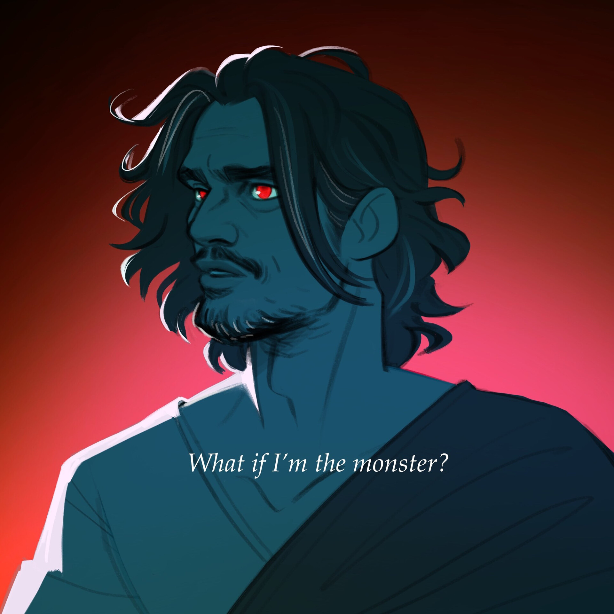

| Odysseus | |
|---|---|
|  | |
| Zeichnung von Angela Chiarelli | |
| Biografische Information | |
| Titel | Dritter König von Ithaka |
| Kapitän der Griechischen Armee | |
| Krieger des Verstands (ehemalig) | |
| Spitznamen | Captain |
| Niemand | |
| neue Bestie | |
| Ody | |
| Monster | |
| König | |
| Beruf | König von Ithaka |
| Kommandant der Griechischen Armee | |
| Zugehörigkeit | Königreich Ithaka |
| Griechische Armee | |
| Familie/Freunde | Olympioniken (Verwandte) |
| Penelope (Ehefrau) | |
| Telemachos (Sohn) | |
| Eurylochos (Freund/Schwager) | |
| Polites (Freund) | |
| Hermes (Urgroßvater) | |
| Athene (Mentorin/entfernte Verwandte) | |
| Antiklea (Mutter) | |
| Laertes (Vater) | |
| Ktimene (Schwester) | |
| Status | lebendig |
| Tod | Akt 2 - symbolisch von Poseidon's Angriff "Schmetter die Meere" ertränkt |
| Hinter den Kulissen | |
| Auftritte | Troja Saga |
| Zyklopen Saga | |
| Ozean Saga | |
| Kirke Saga | |
| Unterwelt Saga | |
| Donner Saga | |
| Weisheits Saga | |
| Vergeltungs Saga | |
| Ithaka Saga | |
| Original Stimme | Jorge Rivera-Herrans |
| Deutsche Stimme | Michael Hinterlechner |
Odysseus (Charakter)
Bin nur ein Mann - Odysseus (Nur ein Mann)
Biografie
Frühes Leben
Laut gestrichenen Songs wie "Your Light" und "Man of the House", wuchs Odysseus auf der Insel Ithaka auf. Er verbrachte viele seiner frühen Jahre mit seinem besten Freund, Polites. Sie verbrachten ihre Zeit damit, durch die Wälder zu laufen, auf der Suche nach Bedrohungen, die man bekämpfen könnte. Zu dieser Zeit bezwang Odysseus auch das magische Wildschwein von Athene - wie im Song Krieger des Verstands beschrieben wird - und ließ sich vielleicht sogar absichtlich treffen um Polites zu schützen, wie im Text von "Your Light" angedeutet wird. Im Alter von neun Jahren, warnte ihn sein Vater, dass er seinen Verstand verliere, und dass Odysseus bald den Thron erben würde. Er wird dann mit 13 Jahren König von Ithaka. Ein paar Jahre später, lernte er Penelope kennen, die er wegen ihrem Verstand und ihrer Haltung bewunderte. Er heiratete sie nicht viel später, was sie zur Königin Ithakas machte, und ein Kind, Telemachos, mit ihr hatte.
Akt 1
Die Troja Saga
Am Anfang von EPIC (Das Pferd und der Säugling), hat
Odysseus den Ithaka Sektor der Griechischen Arme im Trojanischen Krieg seit 10 Jahren geleitet und spielt auch
eine wichtige Rolle in der Armee insgesamt. Er hat die Idee mit dem Trojanischen Pferd um den Krieg zu beenden,
welches ein Erfolg ist, da die Griechen als Sieger aus dem Kampf gehen, ohne Opfer Ithakas.
Während der Schlacht wird Odysseus von Zeus die Zukunft vorhergesagt, und wird gesagt, er soll einen
Säugling - Astyanax, den Sohn des gefallenen Prinz Hektor von Troja - weil er seinen Vater und seine Stadt
rächen wird, in dem er Odysseus jagt und seine Familie und ihn tötet. Er versucht mit Zeus zu verhandeln, doch
mit der Unterstützung der anderen Götter, besteht Zeus darauf, dass es keinen anderen Weg gibt, und dass Odysseus
ihn töten muss. Nach vielem internen Konflikten gibt er nach (Nur ein Mann).
Nach dem Krieg setzen sie die Segel für die Heimreise
(Volle Kraft voraus). Eurylochos, Odysseus' zweiter Befehlshaber,
warnt ihn, dass ihre Essensvorräte zur Neige gehen. Polites zeigt ihm dann etwas, das er in der Ferne entdeckt
hat. Da er die Umstände als Verdächtig einschätzt, geht Odysseus mit Polites auf eine Aufklärungsmission, was
sie auf die Insel der Lotusesser bringt. Odysseus ist angespannt und Polites versucht ihn sich davon zu
überzeugen, den Krieg hinter sich zu lassen. "Empfang die Welt mit Off'nen Arm'n" sagt er ihm. Sie laufen den
schelmischen Lotus Essern über den Weg, welche sie zu einer Höhle im Osten führen um Essen zu finden
(Off'ne Arme). Odysseus' Überlegung zu Polites' Einstellung macht genug
Eindruck, um Athene, seine Mentorin, zu zwingen sich zu zeigen und Odysseus an ihre Lehren zu erinnern
(Krieger des Verstands).
Die Zyklopen Saga
Odysseus leitet eine kleine Gruppe in die Höhle, wo sie genug Schafe finden, um die gesamte Flotte zu versorgen
(Poliphemus). Die Dinge drehen sich aber schnell zum Negativen als
Poliphemus, ein Zyklop und Besitzer der Schafe, hereinkommt und sieht, dass sie sein Lieblingsschaf getötet
haben. Der Zyklop verlangt sofort eine Rückzahlung für den Verlust seines verlorenen Schafes in Form des Blutes
von Odysseus und seinen Männern. Odysseus versucht um sein Leben und das der Crew zu verhandeln mit "dem besten
Wein der Welt", doch das kann ihn nicht abschrecken, weshalb Odysseus (welcher Poliphemus gesagt hat, "Niemand
zu heißen") nur anbietet zu gehen. Er soll aber der letzte Mann sein, der stirbt.
Eine Schlacht beginnt, mit Odysseus, der seine Männer in einen Kampf um ihre Leben führt
(Überlebt). Viele fallen im Kampf, einschließlich Polites, doch der Zyklop
beginnt zu schwanken und wird ohnmächtig als die Hoffnung verloren scheint. Odysseus' schneller Verstand brachte
ihn dazu, den Wein, den er dem Zyklopen anbot, mit Lotus zu vergiften.
Da Poliphemus' Leiche im Weg liegt und Odysseus und die überlebende Crew nicht entkommen können, schnitzen
sie ihre Schwerter um aus Poliphemus' Keule einen riesigen Speer und benutzen ihn um dem Zyklopen das Auge
auszustechen (Denkt stets an sie). Das bringt ihn dazu aufzuwachen und
vom Ausgang wegzugehen. Vom Lärm aufgeweckt, sorgen sich andere Zyklopen von tiefer in der Höhle um Poliphemus
und fragen ihn wer ihn verletzt. Das wird jedoch wieder von Odysseus' Verstand gelöst. Poliphemus erzählt den
anderen Zyklopen, dass "keiner ihn verletzt", was die anderen Zyklopen dazu bringt zu glauben, dass Poliphemus
um sonst Aufsehen bringt.
Odysseus befiehlt der Crew die Schafe zu nehmen und abzuhauen, aber Athene zieht Odysseus dann wieder in ihre
Dimension, mit ihrer Spezialfähigkeit Geistesblitz. Sie befiehlt ihm es zu beenden und den Zyklop zu töten. Das
lehnt Odysseus jedoch ab und klagt über das Blut, das sie schon vergossen haben. Aus Wut und Trauer, und als
Versuch Poliphemus in Zukunft gnadenvoller zu machen, enthüllt Odysseus seinen Namen und Titel und empfiehlt
Poliphemus stets an ihn und an seine Crew zu denken.
Athene taucht dann wieder auf (Mein Lebwohl) und schimpft Odysseus,
weil er den Zyklop nicht getötet hat und ihre Anordnung ignoriert hat, und nennt es "Ohne Rücksicht, höchstens
Sentimental". Weil Odysseus "zu weich" wurde und ihre Lehren vergessen hat, entscheidet sie sich, ihn zu
verlassen und weigert sich, jetliche weitere Unterstützung zu bringen. Odysseus, immer noch würend und trauernd,
stimmt ihrer Entscheidung zu, und beschimpft sie, in dem er behauptet, dass er sie nicht braucht und dass ihre
Lehren ihn sowieso beladtet haben.
Die Ozean Saga
Nachdem sie die Segel wieder hissten, geraten Odysseus und seine Crew in einen massiven Sturm
(Sturm). Odysseus befiehlt der Crew, mit einer Harpune als umgekehrte Anker,
ihre Schiffe an der Himmelsinsel zu befestigen. Als Odysseus gerade losklettern wollte, um Hilfe vom Wind Gott
Aiolos zu hohlen, konfrontiert ihn Eurylochos (Glück geht aus), und
warnt, dass wenn er sich nur auf Glück und Verstand verlässt, und vielleicht irgendwann die Crew riskiert.
Odysseus beruhigt ihn und der Crew, dann bittet er Eurylochos mit ihm zu gehen, und sagt ihm privat, dass er
keine Zweifel gegen ihn verteilen soll.
Odysseus trifft dann wie geplant Aiolos
(Halt dir Freunde nah), und fragt ihn um Hilfe. Der Gott
sperrt den Wind vom Sturm in einem Beutel, gibt ihn Odysseus und nennt es ein Spiel, in dem er nur den Beutel
nicht öffnen darf. Um es aber noch schwieriger zu machen, sähen Aiolos und seine Winions Samen der Zweifel und
Misstrauen unter ihm und der Crew, in dem Aiolos sagt, dass man seiner Crew nicht trauen kann und lässt die
Crew glauben, dass Odysseus sie absichtlich begrügt.
Er verbringt 9 Tage ohne Schlaf um den Beutel zu bewachen und schafft es fast den ganzen Weg zurück nach
Ithaka. Jedoch schläft Odysseus ein und träumt von seinem Sohn und seiner Frau, und währenddessen öffnet
Eurylochos, wahrscheinlich aus misstrauen, den Windbeutel. Penelope's Stimme weckt ihn auf um den Beutel offen
und einen Sturm der Chaos anrichtet zu sehen. Er holt Eurylochos schnell um ihm zu helfen, den Beutel zu
schließen und lässt damit einen kleinen Teil an Wind darin. Er bemerkt bis viel später nicht, dass sein zweiter
Befehlshaber der Täter war.
Jedoch konnten sie den Beutel nicht rechtzeitig schließen, da sie im "Land der Titanen (Laistrygonen)"
landen, wo Poseidon wartet. Hier erzählt er Odysseus, dass Poliphemus, der Zyklop den sie erblindet haben,
sein Sohn war (Grausamkeit). Er scheint Odysseus' Verschonung, dann
Verblindung und Verspottung dem Zyklopen gegenüber als frech und beleidigend zu sehen und besteht darauf
Odysseus eine Lektion zu erteilen. Dass gnädig sein einen Preis hat und "Grausamkeit ist Gnade für uns selbst".
Er und die Giganten zerstören daraufhin den Großteil von Odysseus' Flotte und lässt nur 43 Mann unter seinem
Befehl übrig, aber er und sein übrig geblibenes Schiff schaffen es, die Flucht zu ergreifen in dem sie den
Windbeutel erneut öffnen und den Rest des Windes herrauslassen.
Die Kirke Saga
Die Crew legt nun an einer Insel an (Puppenspieler), auf dieser versucht
Eurylochos seinem Captain etwas zu gestehen. Odysseus weist ihn ab und schickt ihn mit einer Gruppe von Männern
los, um die Insel zu erkunden. Viel schneller als erwartet kommt Eurylochos zurück und erklärt, das die
Männer von der Zauberin Kirke angelockt und in Schweine verwandelt wurden. Er versucht Odysseus davon zu
überzeugen, dass eine Konfrontation mit Kirke das Risiko nicht Wert ist, und dass es besser sei, die übrigen
Männer zu retten indem sie die Verluste akzeptieren und fliehen. Jedoch will Odysseus nicht aufgeben, er sagt,
dass er jeden Weg gehen würde um Eurylochos zu retten, und dass er hofft, dass er das selbe tun würde.
Odysseus wird auf dem Weg zu Kirke's Palast von Hermes konfrontiert, der ihm eine Wurzel von einer heiligen
Blume namens Moly gibt (Würd'st du nicht gern). Hermes erzählt
ihm, dass wenn er diese Wurzel isst, er der Macht der Zauberin widerstehen kann und einen Teil davon selbst zu
erlangen und sein eigenes magisches Wesen zu beschwören. Odysseus tut das was er sagt und bedankt sich bei ihm.
Nachdem er in Kirke's Palast ankommt, versucht er erst charmant zu sein und nennt sie die "Herrin des
Palastes", der Plan geht nicht auf nachdem er erzählt, dass er weiß was sie zu seinen Männern tat
(Erledigt). Wegen dem Moly, ist es ihr nicht möglich, Zauber direkt auf
Odysseus zu beschwören (welcher sie sofort kombiniert, dass Hermes sie ihm gegeben hat). Daher kämpfen sie mit
Kreaturen die sie mir ihren Kräften manifestieren. Odysseus gewinnt den Kampf indem er sein Schwert zieh und sie
bedroht. Kirke versucht dann ihn zu verführen
(Man kann doch auch anders). Der Plan scheint sogar fast
aufzugehen, aber am Schluss lehnt Odysseus ab, da er Penelope innig liebt. Nachdem er darüber klagt, nicht bei
seiner Frau sein zu können und nach Gnade bittet, erzählt Kirke ihm, dass der einzige Weg Poseidon zu umgehen
den sie kennt, ist ihn und seine Crew in die Unterwelt zu schicken um den Seher Tiresias zu treffen.
Die Unterwelt Saga
Odysseus und seine Männer segeln nach Kirke's Wegbeschreibung in die Unterwelt
(Die Unterwelt). Er wird von den Seelen der 558 toten Kameraden
konfrontiert, die wütend auf ihn zu sein scheinen und wiederhohlen Poseidon's idee von "Grausamkeit ist Gnade
für uns selbst". Zudem trifft er die Seelen von Polites und seiner Mutter, die "mit gebrochenem Herzen" starb
während sie auf seine Rückkehr wartete.
Er und seine Crew erreichen endlich Tiresias, mit dem Odysseus alleine spricht
(Nicht mehr du). Tiresias sagt ihm, dass obwohl es eine Welt gibt in
der er Odysseus nach Hause helfen kann, ist es nicht die selbe Welt. Er fährt fort und prophezeit und gibt
Hinweise auf die restlichen Ereignisse auf seiner Reise, wie Meuterei. Er sagt ihm, dass der Mann, der es raus
schafft, nicht der selbe Mann ist, der begann. Odysseus ist wütend darüber und sagt, dass ihre Qualen umsonst
waren, doch Tiresias fährt fort. Er spricht von Freiern, und dass er seine Frau mit einem gefürchteten Mann,
der Odysseus selbst sein soll, doch das weiß er nicht.
Odysseus ist am Boden zerstört, als er die praktisch schlimmstmögliche Nachricht erhält. Er überdenkt seine
Einstellung (Monster), denkt über die Taten von Polyphemus, Kirke, Poseidon
und schließlich über sich selbst als Soldat im Trojanischen Krieg nach und erkennt, dass jede ausgesprochen
„grausame“ Handlung nur dazu dient, das eigene Überleben und manchmal das Überleben der Angehörigen zu sichern.
Er erkennt, dass er "zum Monster werden" muss - das dient dazu, um die Gnade aufzugeben und stattdessen grausam
zur restlichen Welt zu sein - um nach Hause zu kommen und seine Familie wiederzusehen.
Akt 2
Die Donner Saga
Die Saga beginnt mit Odysseus, der mit jemandem spricht, der scheinbar Penelope ist
(Qualen). Doch durch Hinweise im Lied wird allmählich klar, dass sie in
Wirklichkeit eine Sirene ist, die ihn ins Wasser locken will. Obwohl dies erst im nächsten Lied offenbart wird,
hatte Odysseus dies vorausgeahnt: Er sah ein verlassenes Schiff und erkannte, dass sie in das Reich der Sirenen
eingetreten waren. Deshalb hatte er seine Crew angewiesen, sich die Ohren mit Bienenwachs zu verschließen,
sodass seine Kommunikation mit „Penelope“ nur durch Lippenlesen erfolgte. Er spielt ihr Spiel mit, verzögert
jedoch das „Springen ins Wasser“, um sie nach einer hypothetischen Möglichkeit zu fragen, Poseidon zu entkommen.
Sie erzählt ihm, dass der einzige Weg durch die Höhle der Skylla führt, eines Seeungeheuers, das selbst Poseidon
fürchtet. Odysseus ist von dieser Information zutiefst beunruhigt, doch die Sirene bleibt hartnäckig.
Am Ende scheint er ihrem Flehen nachzugeben – nur um plötzlich einen Bogen hervorzuholen und sie zu
erschießen. Er enthüllt seinen Plan und dass er die ganze Zeit wusste, dass sie eine Sirene war
(And'res Beast). Gleichzeitig gibt er preis, dass seine Männer
während seines Gesprächs mit ihr die anderen Sirenen gefangen genommen haben. Odysseus sagt ihr, dass sie ihm
alle nötigen Informationen gegeben habe, um nach Hause zu gelangen, da er wusste, dass Sirenen über umfassende
Kenntnisse der Meeresrouten verfügen. Die Sirenen flehen um Gnade, doch er weist sie kalt zurück und erklärt,
dass sie ihm keine Gnade erwiesen hätten, wären die Rollen vertauscht gewesen. Um zu demonstrieren, wie grausam
er geworden ist, befiehlt er seinen Männern, die Sirenen zu töten, indem sie ihnen die Schwänze abschneiden und
sie ins Wasser zurückwerfen, damit sie ertrinken. Am Ende des Liedes ist es nicht mehr der Name eines Feindes,
den die Crew unheilvoll singt – es ist Odysseus’ eigener Name.
Auf dem Weg zur Höhle der Skylla bemerkt Eurýlochos, dass Odysseus ungewöhnlich still ist
(Skylla). Wahrscheinlich, weil er bereits einen Plan für ein Opfer
geschmiedet hat, um an dem Monster vorbeizukommen – doch weder sein Stellvertreter noch die Crew wissen davon.
Eurylochos gesteht daraufhin, dass er den Windbeutes geöffnet hatte, und entschuldigt sich für seine Tat.
Odysseus reagiert kaum und befiehlt ihm lediglich, sechs Lichter zu entzünden. Später stellt sich heraus, dass
dies eine Falle für Skylla war, da sie sechs Köpfe besitzt. Wie vorhergesagt, packt und verschlingt sie die
sechs Männer, die die Fackeln tragen. Eurylochos gehört zu ihnen, gibt seine Fackel aber noch an jemand anderen
weiter, um der Crew zu helfen – bis er merkt, dass Skylla gezielt die Fackelträger angreift. Am Ende des Liedes
singt Skylla, dass sie und Odysseus gleich seien – beides Monster. Odysseus akzeptiert dies und stimmt mit ihr
in den Gesang ein.
Eurylochos stellt Odysseus wütend zur Rede, weil er bereit war, ihre Kameraden sterben zu lassen, anstatt
das Monster zu bekämpfen (Meuterei). Er erinnert Odysseus daran, wie er
schnell Pläne schmiedete, um ihre Männer vor Polyphemus und Kirke zu retten – doch bei Skylla gab er sechs
Männerleben ohne Zögern auf. Odysseus bleibt stumm und verweigert jegliche Erklärung. Schließlich, wenn auch
widerwillig, zieht Eurylochos sein Schwert. Odysseus befiehlt ihm, aufzuhören, doch Eurylochos weigert sich und
sagt, dass Odysseus so verzweifelt sei, nach Hause zu kommen, dass er jeden opfern würde, um sein Ziel zu
erreichen. Es kommt zum Kampf, und Odysseus scheint Eurylochos zu besiegen und zum tödlichen Schlag auszuholen
– bis er von Perimedes, einem Crewmitglied, niedergestochen wird. Die Crew ist schockiert über den Verrat, und
gemeinsam mit Eurylochos schlagen sie Odysseus bewusstlos.
Als Odysseus erwacht, stellt er fest, dass sie auf einer Insel sind und dass er an eine Statue des
Sonnengottes Helios gefesselt wurde. Eurylochos erklärt ihm, dass die Insel voller Rinder sei und dass er am
Verhungern sei. Odysseus erkennt, dass es sich um die heiligen Rinder des Helios handelt, und fleht Eurylochos
an, nicht dem Hunger zu erliegen. Doch dieser ist zu verzweifelt und tötet eine Kuh. Sofort spüren sie eine
drohende Gefahr, und Odysseus schafft es, sich zu befreien. Er befiehlt der Crew, schnell zum Schiff
zurückzukehren und so schnell wie möglich loszurudern, da er weiß, dass der Mord an den Rindern den Zorn der
Götter heraufbeschwören wird. Doch sie können nicht rechtzeitig entkommen.
Zeus erscheint und stellt sich ihnen (Donner Bringer). Er
spricht von Odysseus’ Arroganz und Frevel, sich mit den Göttern anzulegen. Er stellt die menschliche Hybris als
eine Jungfrau in Not dar und erklärt, dass er beide mit Leichtigkeit zerschmettern könne. Schließlich stellt
Zeus Odysseus vor eine Wahl: seine Crew zu retten oder sich selbst. Odysseus fleht ihn an, ihm diese
Entscheidung nicht aufzubürden, während Eurylochos ihn voller Angst ein letztes Mal anfleht. Doch Odysseus’
Sehnsucht nach Penelope ist zu groß, und er wählt sein eigenes Überleben. Zeus tötet daraufhin den Rest seiner
Crew. Nun allein, wird Odysseus ins Meer geworfen und strandet schließlich auf der Insel von Kalypso.
Die Weisheits Saga
Odysseus erwacht mit Kalypso an seiner Seite, die ihm erzählt, dass er bereits vor einiger Zeit an ihren Ufern
angespült wurde (Liebe im Paradies). Sie fragt ihn nach seinem
Sprechen im Schlaf und zeigt ihm dann ihre Insel, die alles enthält, was er sich jemals wünschen könnte. Sie
erklärt, dass er für alle Ewigkeit ihre Liebe sei. Odysseus, noch nicht an seine neue Umgebung gewöhnt, weist
ihre Annäherungsversuche ab und droht, sie zu töten – doch Kalypso lacht nur über seine Drohung und offenbart
ihm, dass sie eine Göttin ist. Als Odysseus erkennt, dass er nun auf der Insel gefangen ist und keinen Weg nach
Hause hat, gerät er in Panik, während Kalypso ihn sanft umarmt.
Nach sieben Jahren sucht Athene Odysseus’ inzwischen erwachsenen Sohn Telemachos auf und blickt durch
Odysseus’ Erinnerungen, um zu erfahren, was ihm seit ihrer Trennung widerfahren ist. Sie sieht, wie er versucht,
sich das Leben zu nehmen, gequält von der Tatsache, dass er gefangen ist, und vom Schmerz über den Verlust
geliebter Menschen. Kalypso beobachtet dies besorgt. Als ihre Erwähnung von „offenen Armen“ eine Flut von
Erinnerungen an Polites, Eurylochos und den Geist seiner Mutter auslöst, wird Odysseus an den Rand der
Verzweiflung getrieben. Zum ersten Mal seit sieben Jahren ruft er Athene um Hilfe an, woraufhin sie beschließt,
ihm zu helfen.
Athene wendet sich an ihren Vater Zeus und bittet ihn, Odysseus aus seiner Gefangenschaft zu befreien
(Götter Spiele). Zeus jedoch macht daraus ein Spiel: Sie muss fünf Götter
überzeugen, ihn gehen zu lassen – Apollon, Hephaistos, Aphrodite, Ares und Hera. Athene schafft es, alle Götter
zu überreden, doch als sie daraufhin Odysseus’ Freilassung verlangt, gerät Zeus in Wut. Er verfällt in seinen
„Beast Mode“ und schlägt Athene mit seinem Blitz so heftig nieder, dass selbst Ares sich fragt, ob sie tot ist.
Trotz weiterer Angriffe von Zeus hält Athene durch und bringt schließlich ihre letzte verzweifelte Bitte vor,
Odysseus gehen zu lassen, bevor sie unter ihren Wunden zusammenbricht.
Die Vergeltungs Saga
Jemand – später als Hermes enthüllt – informiert Kalypso über Athenes Triumph in der vorherigen Saga. Kalypso
ist verzweifelt bei dem Gedanken, erneut allein zu sein. Sie sagt Odysseus, dass er nun gehen darf
(Mir tut's nicht leid dich zu lieben), doch bevor er geht,
gesteht sie ihm ihre aufrichtige Liebe und entschuldigt sich für alles, was sie getan haben könnte, um ihn zu
verletzen oder ihm Unbehagen zu bereiten – aber nicht dafür, dass sie ihn liebt. Odysseus erwidert, dass er
Kalypso zwar liebt, jedoch nicht auf romantische Weise.
Am Ende, nachdem sie sich von ihm verabschiedet hat, erscheint Hermes Odysseus
(Gefahren), um ihm zu erklären, wie er nach Hause gelangen kann. Er warnt
ihn davor, dass die Reise extrem gefährlich sein wird. Odysseus erklärt sich bereit, alles zu riskieren und
sogar seine Denkweise zu verändern, wenn es ihm nur ermöglicht, nach Hause zu kommen. Hermes befiehlt ihm, dem
Nordstern zu folgen und sich allem zu stellen, was ihm begegnet. Er gibt Odysseus den Beutel mit Poseidons Sturm
darin und warnt ihn – gemeinsam mit den Winions –, dass er den Beutel geschlossen halten muss, wenn er sein Ziel
erreichen will.
Während seiner Reise trifft Odysseus auf das Seeungeheuer Charybdis, vor der ihn Hermes bereits gewarnt
hatte (Charybdis). Er überlebt, indem er sie durch Verzögerungs- und
Ausweichmanöver überlistet.
Kurz vor Ithakas Küste wird er erneut von Poseidon konfrontiert
(Geh schon ins Wasser), der von ihm verlangt, sich ins Wasser zu
begeben. Sollte er sich weigern, droht Poseidon, ganz Ithaka zu überfluten und damit seinen Sohn und seine Frau
zu töten. Odysseus wird von Poseidons Attacke ins Wasser geschleudert, doch die Stimmen seiner toten
Crewmitglieder halten ihn über Wasser und ermutigen ihn, zurückzuschlagen.
In Sechs-Hundert Schlag nutzt Odysseus den Windbeutel, um
dem Wasser zu entkommen, das ihm den Weg nach Hause versperrt. Mit seiner ultimativen Attacke – Sechs-Hundert
Schlag! – verprügelt er Poseidon brutal. Der Meeresgott verspottet ihn daraufhin weiter, doch Odysseus hat
genug davon. Er nimmt Poseidons Dreizack und nutzt dessen Unsterblichkeit, um ihm wahre Qualen zuzufügen, sodass
Poseidon schließlich Odysseus um Gnade anfleht. Schließlich lässt er ihn frei, und Poseidon ruft den Sturm zurück.
Die Ithaka Saga
Nachdem er in Ithaka angekommen ist, tötet Odysseus die Freier, voller Zorn über das, was sie Telemachos und
Penelope antun wollten. Da während einiger ihrer Tode Telemachos’ Motiv erklingt und er in der Odyssee
tatsächlich bei der Tötung der Freier hilft, tötet auch Telemachos einige von ihnen
(Odysseus).
Schließlich vereint sich Odysseus wieder mit seinem Sohn
(Ich kann mich nur wundern). Er fragt Penelope, ob sie ihn
noch immer lieben würde, wenn sie wüsste, was er alles getan hat, und gesteht ihr, dass er nicht mehr derselbe
Mann ist, in den sie sich einst verliebt hat
(Würdest du mich wieder lieben).
Trivia
- Obwohl sie im Musical nie erwähnt wird, hatte Odysseus laut Homer eine Schwester, Ktimene, die Eurylochos' Ehefrau war(was ihn zum Schwager seines Captains macht).
- Odysseus' Signatur-instrument ist die Gitarre. Die Art von Gitarre ändert sich je nach seiner Stimmung, mit friedlichen Momenten symbolisiert von einer Nylonsaitengitarre und intensivere Momente symbolisiert von einer E-Gitarre. Er hat auch eine weichere E-Gitarre in Monster und Würdest du mich wieder lieben, und auch eine Stahlsaitengitarre die seinen Stolz repräsentiert.